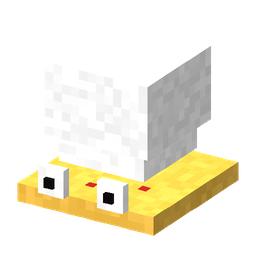
chef_italien
Chef Italien
Italian Chef
Thème Ananas Pizza
Pineapple Pizza theme
Garde ses distances et lance des parts de pizza.
Keeps its distance and throws pizza slices.
GeckoLib · Blockbench
43 mobs animés : un mob signature par thème + 8 mobs des variations Lucky. ❤ = cœurs de vie, ⚔ = cœurs de dégâts.
43 animated mobs: one signature mob per theme + 8 Lucky variation mobs. ❤ = health hearts, ⚔ = damage hearts.

Thème Ananas Pizza
Pineapple Pizza theme
Garde ses distances et lance des parts de pizza.
Keeps its distance and throws pizza slices.
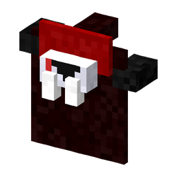
Thème Vampire Gothique
Gothic Vampire theme
Corps à corps ; se dissout en nuée de chauves-souris pour réapparaître derrière sa cible.
Melee; dissolves into a bat swarm to reappear behind its target.
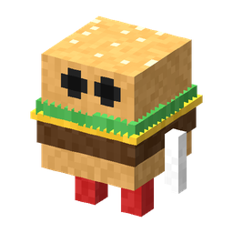
Thème Fast-Food
Fast Food theme
Gros burger qui saute et écrase sa cible en l'envoyant en l'air.
Big burger that jumps and slams its target into the air.
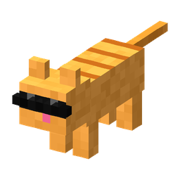
Thème Chats d'Internet
Internet Cats theme
Chat à lunettes apprivoisable (morue / saumon). Sauvage, il fait tomber l'objet que tu tiens.
Tameable cat in shades (cod / salmon). Wild, it knocks the item out of your hand.
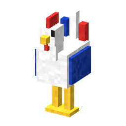
Thème Volaille
Poultry theme
Coq géant tricolore, neutre tant qu'on ne le frappe pas. Chante et lance des œufs.
Giant tricolour rooster, neutral until hit. Crows and throws eggs.
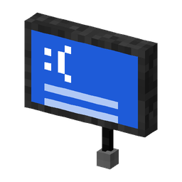
Thème BSOD
BSOD theme
Écran planté qui flotte, aveugle au contact et se téléporte par saccades.
Crashed screen that floats, blinds on contact and teleports in jerks.
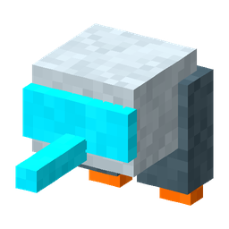
Thème Anachronisme
Anachronism theme
Allié chromé au jetpack : te suit, tire au laser sur les monstres.
Chrome jetpack ally: follows you and lasers monsters.
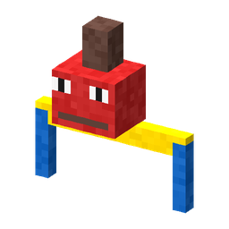
Thème Retard de Vol
Flight Delay theme
Prélève une « taxe » (1 objet) et frappe au tampon si on insiste.
Collects a “tax” (1 item) and stamps you if you insist.
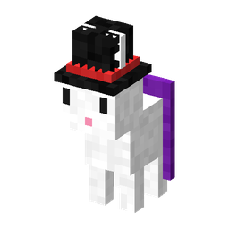
Thème Magie de Comptoir
Bar Magic theme
Lapin en haut-de-forme : sort des objets de son chapeau puis disparaît.
Top-hat rabbit: pulls items out of its hat, then vanishes.
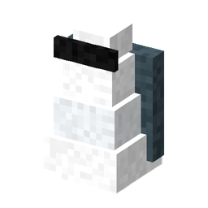
Thème Pénurie 2020
Shortage 2020 theme
Marchand furtif : objet rare contre 8 émeraudes, s'enfuit si on le frappe.
Shady dealer: rare item for 8 emeralds, flees when hit.
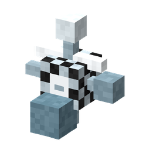
Thème Art Moderne
Modern Art theme
Ne bouge que quand personne ne la regarde.
Only moves when nobody is looking.
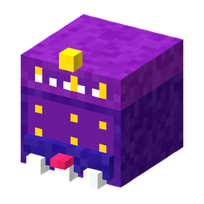
Thème JDR D20
TTRPG D20 theme
Faux coffre-dé qui mord ; à sa mort, un d20 décide du butin.
Fake dice chest that bites; a d20 roll decides its loot.
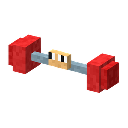
Thème Gym Bro
Gym Bro theme
Frappe fort, se flex (Force) puis donne des crampes (Lenteur).
Hits hard, flexes (Strength) then gives cramps (Slowness).
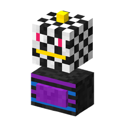
Thème Disco 80
80s Disco theme
Lance une piste de danse (nausée) puis frappe en pirouette.
Starts a dance floor (nausea) then strikes with a spin.
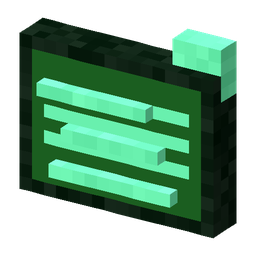
Thème Lag / Bug
Lag / Bug theme
Fantôme glitch qui se téléporte et mélange ta hotbar.
Glitch ghost that teleports and shuffles your hotbar.
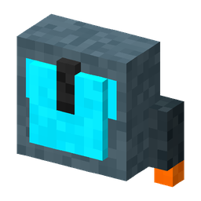
Thème Speedrunner
Speedrunner theme
Bot ultra-rapide qui dash vers sa cible.
Ultra-fast bot that dashes at its target.
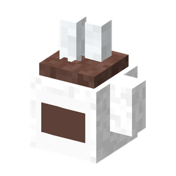
Thème Pause Café
Coffee Break theme
Clic droit = espresso ; le frapper = café brûlant.
Right-click = espresso; hit it = scalding coffee.
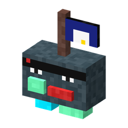
Thème Piraterie Torrent
Torrent Piracy theme
« Télécharge » l'objet en main ; lâche le Disque Dur du Capitaine.
“Downloads” your held item; drops the Captain's Hard Drive.
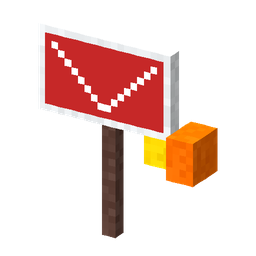
Thème Grève
Strike theme
Pancarte et mégaphone flottants.
Floating sign and megaphone.
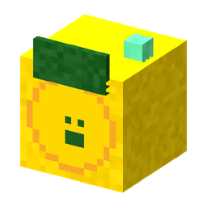
Thème Crypto Bulle
Crypto Bubble theme
Bulle qui gonfle puis crash (émeraude… ou rien).
Bubble that inflates then crashes (emerald… or nothing).
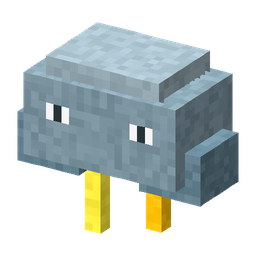
Thème Météo Folle
Crazy Weather theme
Nuage orageux qui frappe la foudre.
Storm cloud that calls lightning.
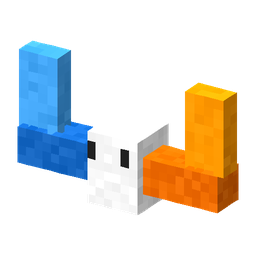
Thème Multivers
Multiverse theme
Barre-portail qui téléporte sa cible ailleurs.
Portal bar that zaps its target elsewhere.
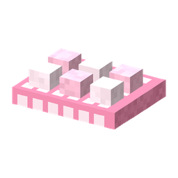
Thème ASMR Fidget
ASMR Fidget theme
Pop-it géant qui rebondit et « pop » (recul doux).
Giant pop-it that bounces and “pops” (soft knockback).
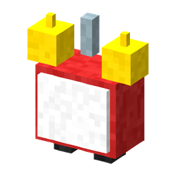
Thème Cauchemar du Matin
Morning Nightmare theme
Réveil vivant qui sonne (nausée + cécité courte).
Living alarm clock that rings (nausea + short blindness).
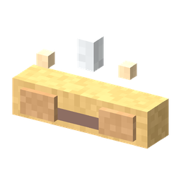
Thème Boulangerie
Bakery theme
Baguette géante qui éparpille des miettes.
Giant baguette scattering crumbs.
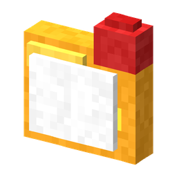
Thème Impôts
Taxes theme
Dossier vivant qui tamponne (fatigue).
Living folder that stamps you (mining fatigue).
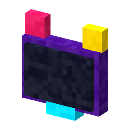
Thème Streamer
Streamer theme
Alerte donation flottante (glow + confusion).
Floating donation alert (glow + confusion).
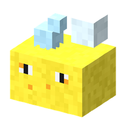
Thème Propreté
Cleanliness theme
Éponge qui frotte (recul + bulles).
Scrubbing sponge (knockback + bubbles).
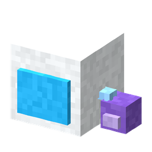
Thème Gravité Zéro
Zero Gravity theme
Casque orbital qui soulève les joueurs.
Orbital helmet that lifts players.
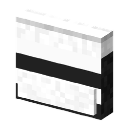
Thème Film d'Action
Action Movie theme
Clap de cinéma qui claque (étourdit).
Film clapper that snaps (short stun).
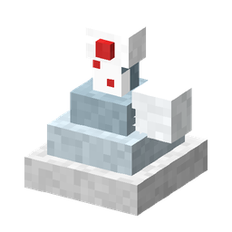
Thème Complot
Conspiracy theme
Pyramide à œil qui surveille (glow).
All-seeing pyramid (glow).
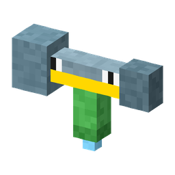
Thème Plomberie
Plumbing theme
Clé à molette qui asperge.
Wrench that sprays water.
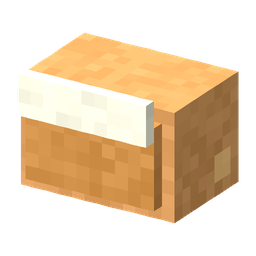
Thème Fortune Cookie
Fortune Cookie theme
Biscuit qui croque et embrouille.
Cookie that crunches and confuses.
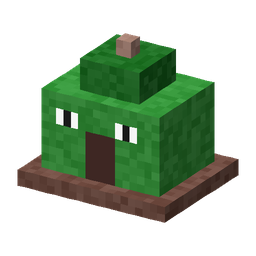
Thème Camping
Camping theme
Tente vivante au feu de camp.
Living tent with a campfire.
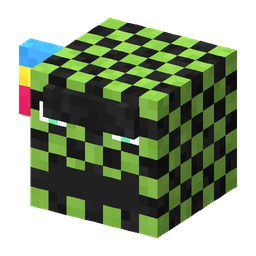
Thème Invasion de Memes
Meme Invasion theme
Cube qui spamme l'emotional damage (lévitation + nausée).
Cube spamming emotional damage (levitation + nausea).
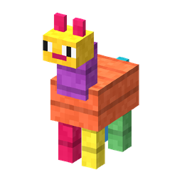
Variation HIGH
HIGH variation
Fuit les coups et éclate en butin (parfois un outil légendaire).
Runs from hits and bursts into loot (sometimes a legendary tool).
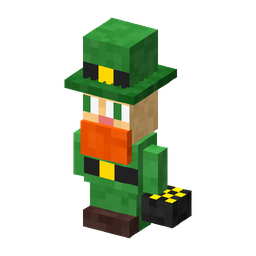
Variation HIGH
HIGH variation
Fuit le joueur, sème des pépites d'or à chaque coup, disparaît après 60 s.
Runs away, drops gold nuggets on every hit, vanishes after 60 s.
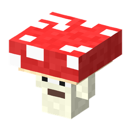
Variation NEUTRAL
NEUTRAL variation
Danse et donne un effet farfelu aux joueurs proches.
Dances and gives a silly effect to nearby players.
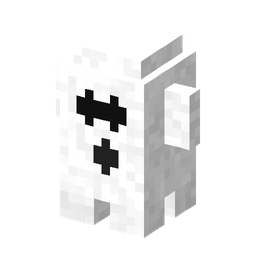
Variation NEUTRAL
NEUTRAL variation
« Bouh ! » (lenteur), puis s'évapore après 3 frayeurs.
“Boo!” (slowness), then fades after 3 scares.
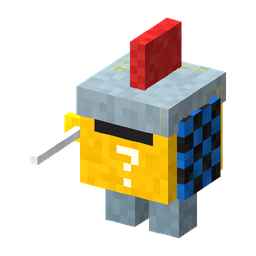
Variation LOW
LOW variation
Lucky Block en armure : épée lourde, coup de bouclier, 20 % d'arme légendaire.
Armoured Lucky Block: heavy sword, shield bash, 20% legendary weapon.
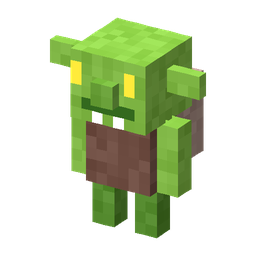
Variation LOW
LOW variation
Vole l'objet en main et s'enfuit — tue-le pour le récupérer.
Steals your held item and runs — kill it to get it back.
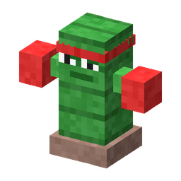
Variation LOW
LOW variation
Le frapper au corps à corps pique ; enchaîne des combos.
Hitting it in melee hurts; throws punch combos.
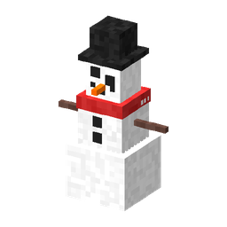
Variation LOW
LOW variation
Boules de neige ralentissantes et blizzard autour de lui.
Slowing snowballs and a blizzard around it.
Chaque mob est défini une seule fois dans tools/generate_mobs.py : modèle GeckoLib, animations idle / walk / attack / special, texture 128×128 et un .bbmodel prêt à ouvrir dans Blockbench (docs/blockbench/mobs/).
Each mob is defined once in tools/generate_mobs.py: GeckoLib model, idle / walk / attack / special animations, 128×128 texture and a .bbmodel ready to open in Blockbench (docs/blockbench/mobs/).
/summon unpredictableblocks:<id>